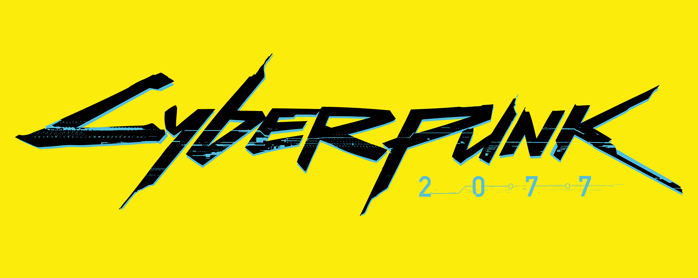
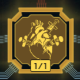
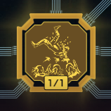

Guia de Build - Cyberpunk 2077 2.13
Com a Atualização 2.0, as árvores de habilidades foram redesenhadas. Nesse guia você pode conhecer um pouco mais cada habilidade, e saber em quais investir para montar sua build no jogo.
Atributos
Existem 5 Atributos no jogo; Corpo, Reflexos, Habilidade Técnica, Inteligência e Moral. Cada atributo pode ser melhorado numa escala de 3 a 20 pontos. Pontos de Atributos são obtidos ao final de cada missão ou trabalho concluídos. Confira abaixo a descrição de cada Atributo:
Lista de Atributos e Vantagens:
- Corpo
- Determina sua resistência e poder físico bruto. Invista nesse atributo para melhorar sua proficiência em armas de fogo em geral.
- +2 de Vida Máxima por cada Ponto de Atributo.
- Reflexos
- Determina sua manobrabilidade e esquiva dos ataques inimigos. Invista nessa habilidade para melhorar sua proficiência com lâminas
- +0.5 de Crítico por cada Ponto de Atributo
- Habilidade Técnica
- Determina seu Conhecimento Técnico.Invista nesse atributo para melhorar sua proficiência com explosivos e armas tecnólogicas.
- +2 de Armadura por cada Ponto de Atributo
- Inteligência
- Determina sua capacidade de Hacking e Trilha-Rede.Invista nesse atributo para liberar todo o seu potencial como trilha-rede e hackear sub-redes locais.
- +1 Máximo de RAM por 4 Pontos de Atributo
- Moral
- Determina sua habilidade de Furtividade.Invista nesse atributo para melhorar sua habilidades com armas de arremesso.
- +1.25 de Dano Crítico por Ponto de Atributo
Perks
Perks são benefícios ou vantagens adicionais que podem ser ativadas mediante a quantidade de Pontos de Atributos investidos. Confira abaixo as tabelas de cada atributo:
| Corpo |
| Item |
Nome |
Descrição |
Pts |
|  |
Analgésico |
Regeneração de Vida durante combate |
3+ |
| Reflexos |
| Item |
Nome |
Descrição |
Pts |
|  |
Escorregadio |
Evasão melhorada ao correr durante combate. |
3+ |
| Habilidade Técnica |
| Item |
Nome |
Descrição |
Pts |
| |
Escorregadio |
Evasão melhorada ao correr durante combate. |
3+ |
Idéias de Building